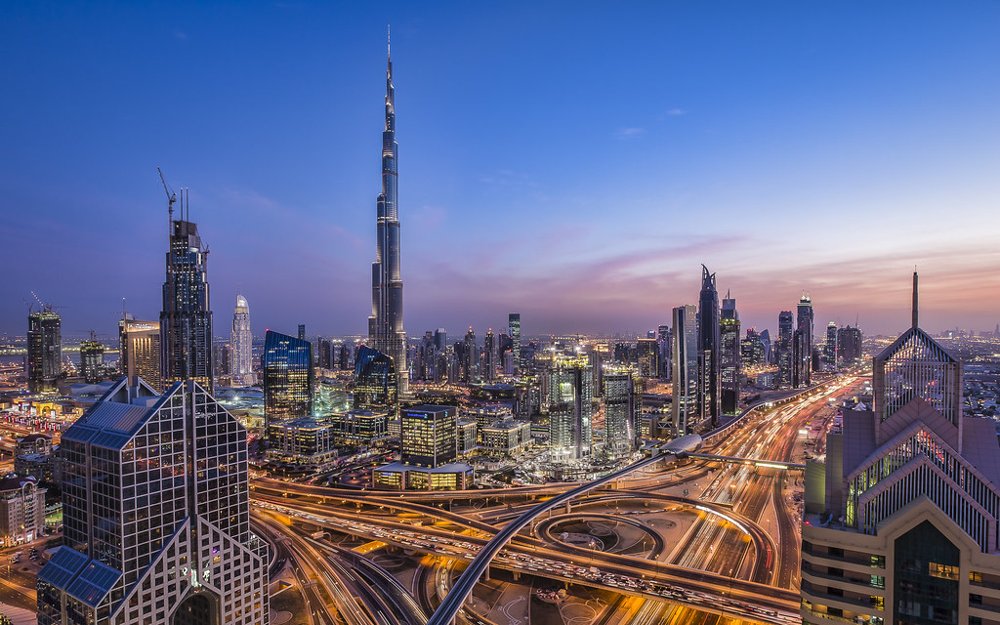

This is Dubai

Founded in the 1800s as a fishing village, Dubai has emerged as a major
center for regional and international trade since the early 20th century
and early 21st centuries with a focus on tourism and luxury. It has the
second-most five-star hotels in the world and the tallest building in the
world, the Burj Khalifa, which is 828 metres (2,717 ft) tall.
In the eastern Arabian Peninsula, on the coast of the Persian Gulf, it is
a major global transport hub for passengers and cargo. Oil revenue helped
accelerate the development of the city, which was already a major
mercantile hub.
Dubai has been a center for regional and international trade since the
early 20th century, and its economy relies on revenues from trade,
tourism, aviation, real estate, and financial services. Oil production
contributed less than 1 percent of the emirate's GDP in 2018. Due to
financial secrecy, low taxes, and valuable real estate, Dubai is an
appealing destination for money launderers, criminals, corrupt political
figures and sanctioned businesspeople to launder or hide money.
The city has a population of around 3.60 million (as of 2022). More than
90% of the population are foreigners.
History
The history of human settlement in the area now defined by the United Arab
Emirates is complex and extensive. It points to extensive trading links
between the civilisations of the Indus Valley and Mesopotamia, and even as
far afield as the Levant. Archaeological finds in the emirate of Dubai,
particularly at Al-Ashoosh, Al Sufouh and the notably rich trove from
Saruq Al Hadid show settlement through the Ubaid and Hafit periods, the
Umm Al Nar and Wadi Suq periods and the three Iron Ages in the UAE. The
area was known to the Sumerians as Magan and was a source of metallic
goods, notably copper and bronze.
The area was covered with sand about 5,000 years ago as the coast
retreated inland, becoming part of the city's present coastline.
Pre-Islamic ceramics have been found from the 3rd and 4th centuries. Prior
to the introduction of Islam to the area, the people in this region
worshiped Bajir (or Bajar). After the spread of Islam in the region, the
Umayyad Caliph of the eastern Islamic world conquered south-east Arabia
and drove out the Sassanians. Excavations by the Dubai Museum in the
region of Al-Jumayra (Jumeirah) found several artefacts from the Umayyad
period.
An early mention of Dubai in 1095 is in the Book of Geography by the
Andalusian-Arab geographer Abu Abdullah al-Bakri.[citation needed] The
Venetian pearl merchant Gasparo Balbi visited the area in 1580 and
mentioned Dubai (Dibei) for its pearling industry.
Dubai is thought to have been established as a fishing village in the
early 18th century and was, by 1822, a town of some 700 to 800 members of
the Bani Yas tribe and subject to the rule of Sheikh Tahnun bin Shakhbut
of Abu Dhabi. In 1822, a British naval surveyor noted that Dubai was at
that time populated with a thousand people living in an oval-shaped town
surrounded by a mud wall, scattered with goats and camels. The main
footpath out of the village led to a reedy creek while another trailed off
into the desert which merged into caravan routes.
In 1833, following tribal feuding, members of the Al Bu Falasah tribe
seceded from Abu Dhabi and established themselves in Dubai. The exodus
from Abu Dhabi was led by Obeid bin Saeed and Maktoum bin Butti, who
became joint leaders of Dubai until Ubaid died in 1836, leaving Maktoum to
establish the Maktoum dynasty.
Dubai signed the General Maritime Treaty of 1820 with the British
government along with other Trucial States, following the British campaign
in 1819 against the Ras Al Khaimah. This led to the 1853 Perpetual
Maritime Truce. Dubai also entered into an exclusivity agreement in which
the United Kingdom took responsibility for the emirate's security in 1892.
In 1841, a smallpox epidemic broke out in the Bur Dubai locality, forcing
residents to relocate east to Deira. In 1896, fire broke out in Dubai, a
disastrous occurrence in a town where many family homes were still
constructed from barasti palm fronds. The conflagration consumed half the
houses of Bur Dubai, while the district of Deira was said to have been
totally destroyed. The following year more fires broke out. A female slave
was caught in the act of starting one such blaze and was subsequently put
to death.
Dubai's geographical proximity to Iran made it an important trade
location. The town of Dubai was an important port of call for foreign
tradesmen, chiefly those from Iran, many of whom eventually settled in the
town. By the beginning of the 20th century, it was an important port. At
that time, Dubai consisted of the town of Dubai and the nearby village of
Jumeirah, a collection of some 45 areesh (palm leaf) huts. By the 1920s,
many Iranians settled in Dubai permanently, moving across the Persian
Gulf. By then, amenities in the town grew and a modern quarter was
established, Al Bastakiya.
Dubai was known for its pearl exports until the 1930s; the pearl trade was
damaged irreparably by the 1929 Great Depression and the innovation of
cultured pearls. With the collapse of the pearling industry, Dubai fell
into a deep depression and many residents lived in poverty or migrated to
other parts of the Persian Gulf.
In 1937 an oil exploration contract was signed which guaranteed royalty
rights for Dubai and concessionary payments to Sheikh Saeed bin Maktoum.
However, due to World War II, oil would not be struck until 1966.
In the early days since its inception, Dubai was constantly at odds with
Abu Dhabi. In 1947, a border dispute between Dubai and Abu Dhabi on the
northern sector of their mutual border escalated into war. Arbitration by
the British government resulted in a cessation of hostilities.
Despite a lack of oil, Dubai's ruler from 1958, Sheikh Rashid bin Saeed Al
Maktoum, used revenue from trading activities to build infrastructure.
Private companies were established to build and operate infrastructure,
including electricity, telephone services and both the ports and airport
operators. An airport of sorts (a runway built on salt flats) was
established in Dubai in the 1950s and, in 1959, the emirate's first hotel,
the Airlines Hotel, was constructed. This was followed by the Ambassador
and Carlton Hotels in 1968.
Geography
Dubai is situated on the Persian Gulf coast of the United Arab Emirates
and is roughly at sea level (16 m or 52 ft above). The emirate of Dubai
shares borders with Abu Dhabi in the south, Sharjah in the northeast, and
the Sultanate of Oman in the southeast. Hatta, a minor exclave of the
emirate, is surrounded on three sides by Oman and by the emirates of Ajman
(in the west) and Ras Al Khaimah (in the north). The Persian Gulf borders
the western coast of the emirate. Dubai is positioned at 25.2697°N
55.3095°E and covers an area of 1,588 sq mi (4,110 km2), which represents
a significant expansion beyond its initial 1,500 sq mi (3,900 km2)
designation due to land reclamation from the sea.
Dubai lies directly within the Arabian Desert. However, the topography of
Dubai is significantly different from that of the southern portion of the
UAE in that much of Dubai's landscape is highlighted by sandy desert
patterns, while gravel deserts dominate much of the southern region of the
country. The sand consists mostly of crushed shell and coral and is fine,
clean and white. East of the city, the salt-crusted coastal plains, known
as sabkha, give way to a north and south running line of dunes. Farther
east, the dunes grow larger and are tinged red with iron oxide.
he flat sandy desert gives way to the Western Hajar Mountains, which run
alongside Dubai's border with Oman at Hatta. The Western Hajar chain has
an arid, jagged and shattered landscape, whose mountains rise to about
1,300 metres (4,265 feet) in some places. Dubai has no natural river
bodies or oases; however, Dubai does have a natural inlet, Dubai Creek,
which has been dredged to make it deep enough for large vessels to pass
through. Dubai also has multiple gorges and waterholes, which dot the base
of the Western Al Hajar mountains. A vast sea of sand dunes covers much of
southern Dubai and eventually leads into the desert known as The Empty
Quarter. Seismically, Dubai is in a very stable zone—the nearest seismic
fault line, the Zagros Fault, is 200 kilometres (124 miles) from the UAE
and is unlikely to have any seismic impact on Dubai. Experts also predict
that the possibility of a tsunami in the region is minimal because the
Persian Gulf waters are not deep enough to trigger a tsunami.
The sandy desert surrounding the city supports wild grasses and occasional
date palms. Desert hyacinths grow in the sabkha plains east of the city,
while acacia and ghaf trees grow in the flat plains within the proximity
of the Western Al Hajar mountains. Several indigenous trees such as the
date palm and neem as well as imported trees such as the eucalyptus grow
in Dubai's natural parks. The MacQueen's bustard, striped hyena, caracal,
desert fox, falcon and Arabian oryx are common in Dubai's desert. Dubai is
on the migration path between Europe, Asia and Africa, and more than 320
migratory bird species pass through the emirate in spring and autumn. The
waters of Dubai are home to more than 300 species of fish, including the
hammour. The typical marine life off the Dubai coast includes tropical
fish, jellyfish, coral, dugong, dolphins, whales and sharks. Various types
of turtles can also be found in the area including the hawksbill turtle
and green turtle, which are listed as endangered species.